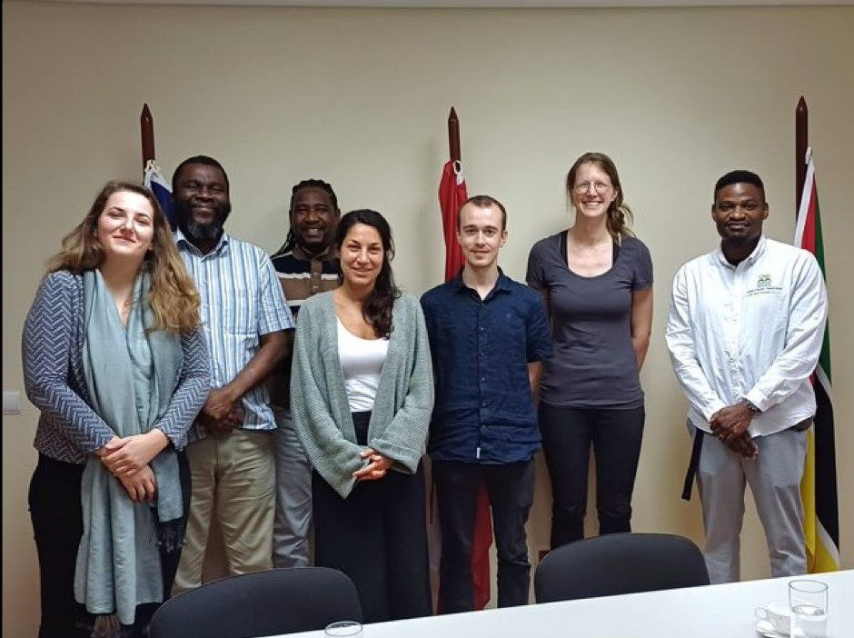

Universidad Eduardo Mondlane (UEM), Maputo, Mozambique
Technical University of Vienna (TU Wien), Austria
DrySat Team
Rogério Borguete A. Rafael
Luis Artur
Famba, Sebastião
Celma Niquice Janeiro
Jaime Macuácua

Mariette Vreugdenhil
Samuel Massart
Carina Villegas Lituma
Wolfgang Wagner
Source: https://baxter-agency.com/
Context
Mozambique is vulnerable to climate change
High-reliance on rain-fed agriculture
Increased occurrence of droughts
Delay in the start of the rainy season
Stakeholders
Mozambican Ministry of Agriculture and Rural Development (MADER)
National Institute of Meteorology (INAM)
Objectives
Improve early warning/action for drought and agricultural practices with stakeholders
Developing satellite drought indicators at a kilometer sampling scale
Integration of early warning system tools for drought monitoring
Gender sensitive capacity development of project beneficiaries
Detecting Droughts
Rain gauges
Field soil moisture sensors
Microwave Satellites
continuous (all weather, day-and-night)
km sampling scale
Bhardwaj et al. 2022
Microwave Backscattering
https://hubblesite.org
Microwave Backscattering
1 km sampling soil moisture
6.25 km sampling soil moisture
Remotely Sensed Soil Moisture
Quast et al. (2023)
Remotely Sensed Soil Moisture
In Situ Soil Moisture
2023 in-situ installation
General lack of in-situ data for product validation in Mozambique
4 depths (10, 20, 50cm)
Daily update to the cloud
Validation
Result and validation in future publications: High-resolution drought monitoring with Sentinel-1 and ASCAT: A case-study over Mozambique, Massart Samuel,, Vreugdenhil Mariette, Rogerio Borguete, Rafael, Villegas-Lituma Carina, Muguda Sanjeevamurthy Pavan, Hahn Sebastian, Wolfgang Wagner (2025)
Simple Metrics for Drought
Data Dissemination
Capacity Building
Remotely sensed drought as early warnings:
Field demonstration of early warning tools
Training of extension workers
Continuous professional development
On-site and remote courses
Digital learning environment
Cloud-based
Browser as only requirement
Photo credit: Seogi Kang
Women2women Mentoring Program
Outlook
Start of the rainy season metric
Context of climate change
Historical microwave backscatter time series
Region-specific likelihood
Intuitive drought information tools
Mobile friendly
Easy maintenance
Open source and interoperable
Acknowledgements
This project has received funding from the Austrian Development Agency (ADA) under grant agreement No 2789-00/2022